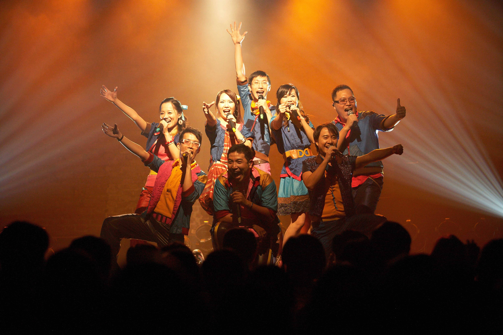

01聲動台灣
定點式舞台表演
新北風市集區舞台
7/1(六) 14:00-14:30
7/2(日) 14:00-14:30
7/2(日) 14:00-14:30
一道融容之音，以「新聲」宣告著「新生」，引動土地的能量，聲動新生地，聲動新北，聲動台灣。演出作品改編國、臺、客、原、英不同語言歌曲，以跨界組曲的形式，帶領觀眾感受多元文化的匯聚動能，用最接近人心的純粹人聲帶來最純粹的感動。
神秘失控人聲樂團
成立於2002年，神秘失控擅長以純人聲形式進行演出，突破傳統重唱觀念與限制，強調帶給觀眾整體而獨特的經驗感受。演出作品榮獲國內外諸多獎項，並受邀於金馬獎、金鐘獎、國慶大典以及歐美城市等重要場合巡迴演出。
表演總監／江翊睿
音樂總監／董士賢
歌手／鄭佳俐
歌手／王悅甄、鍾琪、江翊睿、林欣民、陳午明、董士賢、蔡明蒼
特別感謝 | Vocal Asia、財團法人科華文教基金會